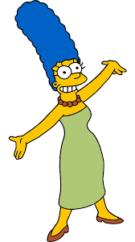

Marge Simpson
Marjorie Bouvier de Simpson más conocida como Marge Simpson es un personaje ficticio de la serie de televisión de dibujos animados Los Simpson. Es la esposa de Homer Simpson y madre de los tres hijos que ha tenido de este matrimonio: Bart, Lisa y Maggie. Ella, junto al resto de su familia, conforman el elenco de personajes protagonistas de Los Simpson, su presencia ha demostrado ser fundamental para mantener la familia unida. Marge fue creada por el dibujante Matt Groening en el vestíbulo de la oficina de James L. Brooks, para debutar en la televisión el 19 de abril de 1987, en el corto Good Night emitido en El show de Tracey Ullman.3 La característica voz ronca de Marge se la pone Julie Kavner en la versión original, quien también da voz a sus familiares más cercanos femeninos especialmente sus hermanas, Patty y Selma Bouvier, y su madre, Jacqueline. Los productores han limitado la voz de Kavner a los personajes femeninos de la familia Bouvier, dado que su registro es demasiado reconocible y peculiar. Las actrices de doblaje hispanas también han limitado su interpretación a estos personajes e incluso algunas han sufrido problemas de garganta durante la interpretación.[cita requerida] El personaje de Marge Simpson ha ahondado en los roles arquetípicos que suelen desempeñar las esposas amas de casa en las series de animación, en la misma línea promovida por Hanna Barbera con Vilma Picapiedra o Jane Jetson. Su apasionada y ciega dedicación a su desagradecida familia ha servido de modelo moderno para otros personajes femeninos en series de animación posteriores. Por ello, ha sido considerada como la mejor madre tanto ficticia como real por el público británico.